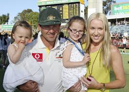

Born in Launceston, Tasmania on 19 December 1974, Ricky Ponting is the eldest of Graeme and Lorraine Ponting's four children. Graeme was "a good club cricketer" and played Australian rules football, while Lorraine was a state vigoro champion. His uncle Greg Campbell played test cricket for Australia in 1989 and 1990. Ponting's parents first lived in Prospect 4.1 km (2.5 mi) south of city centre; however, they moved into the working-class area of Newnham, 6 km (3.7 mi) north of central Launceston.
After marrying long-time girlfriend, law student Rianna Jennifer Cantor, in June 2002, Ponting credited her as the reason for his increased maturity. Their daughter Emmy Charlotte was born in Sydney on 26 July 2008.Second daughter Matisse Ellie was born in Sydney on 8 September 2011.
